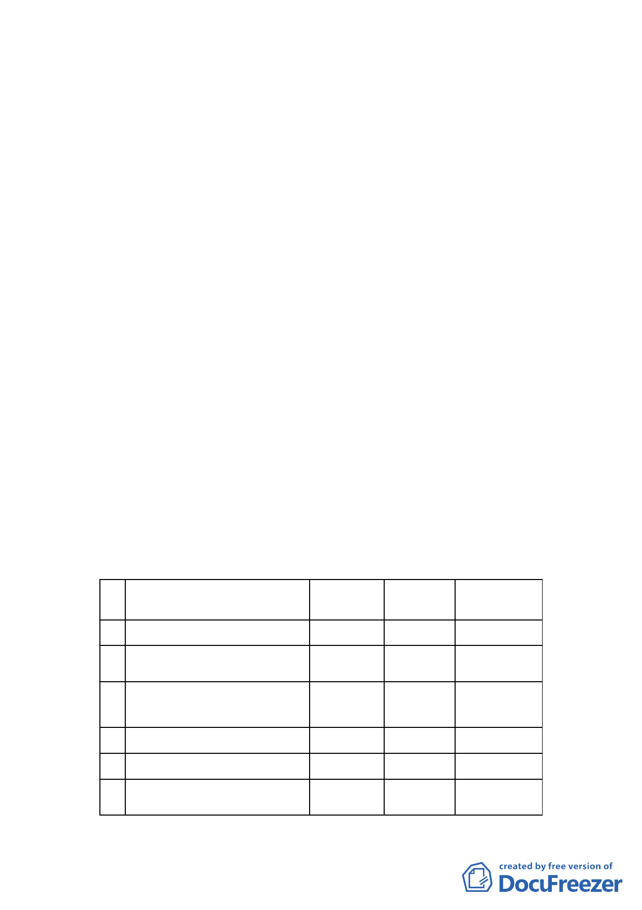

畫案
案情概要說明：
一、 計畫範圍：以木柵路一段為界分為南、北二基地。北側北以
保護區為界、西以計畫道路為界、南至木柵路一段，東側緊
臨再興中學，面積約 4.53 公頃。南側西臨光輝路，南至下
崙路光輝公園及台電公司機關用地，東接木柵公園、中山國
小，面積約 4.34 公頃；合計為 8.87 公頃。
二、 變更理由：
（一）文山區永建國小學生活動空間平均每人 5.6 平方公尺，未達部
頒 12 平方公尺，且該地區人口成長逐年增加，校地不足負荷使
用需求。
（二）市府教育局考量土地取得費用約 13 億，非其能籌措，評
估後函請中國國民黨協助中興山莊土地之捐地事宜，並
請其提出相關使用需求、規劃構想等，俾利遷校。國民
黨於 91 年 4 月起請市府將該等土地作全盤檢討妥為規
劃，遂辦理本變更案。
三、 變更法令依據：都市計畫法第 27 條第 1 項第 4 款。
四、 申請及辦理單位：臺北市政府。
五、 變更內容：
編
號
位置
原計畫 新計畫 面積（公頃）
1 中興山莊北側基地平坦地區
行政區 國小用地
2.10
2
中興山莊北側基地地形陡峭之
地區
行政區
保護區
1.64
3
中興山莊北側基地，緊鄰再興
中學與住宅區之部分
行政區
住宅區
0.65
4 中興山莊北側基地平坦地區
行政區 道路用地
0.14
5 中興山莊南側土地
機關用地 住宅區
6
中興山莊南側基地緊鄰木柵公
園之坡地
機關用地
公園用地
4.11
0.23
17